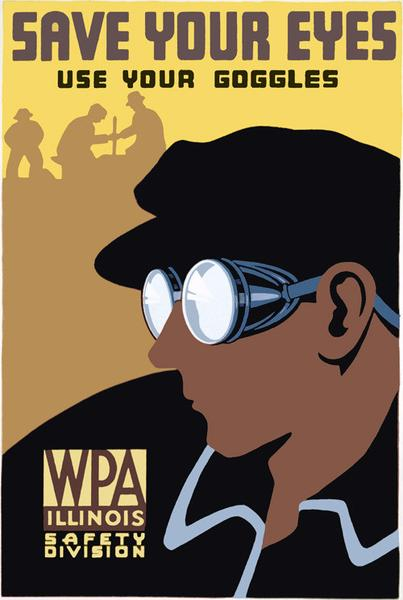

This image is a poster telling you to Save You Eyes and to use safety your goggles. It demonstrates that by having a drawing of a man using his safety goggles while other people are working in the backgrounds.